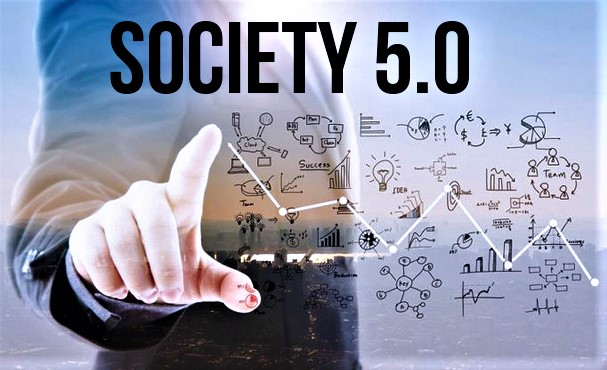

Revolusi Industri 5.0
Mulai dikembangkan oleh Jepang sejak tanggal 21 Januari 2019, industri 5.0 sampai sekarang terus melaju cepat seiring dengan perkembangan teknologi di sekitar kita. Revolusi industri ini akan melibatkan banyak bentuk teknologi dan Indonesia menjadi salah satu negara yang kini sedang berusaha untuk mewujudkannya.
Di era revolusi industri 5.0, kita akan dibawa pada kombinasi human-centered dan technology-based. Akan ada perpaduan harmonis antara tenaga kerja manusia dan teknologi. Salah satu contoh nyata adalah pemakaian robot yang bisa mempermudah kerja manusia tanpa menggantikannya sepenuhnya.
Indonesia mulai beradaptasi dengan beberapa bentuk teknologi yang mengarah ke revolusi industri 5.0, seperti software auto responder, business intelligence software, dan banyak lagi. Semua teknologi ini dirancang untuk mendukung dan meningkatkan produktivitas manusia, bukan menggantikannya.
Kembali ke Halaman Utama